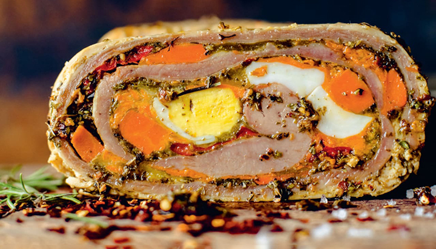

Entradas
Matambre relleno arrollado
El clásico matambre, con el toque especial de Tenedor Libre.
Ingredientes
- 750 gr de matambre. Puede ser de vaca o cerdo
- 2 zanahorias
- 1 morrón colorado
- 1 puñado de perejil
- 2 huevos
- 200 gr de queso rallado
- Sal y pimienta a gusto
Paso a paso
- Colocar la zanahoria rallada, el perejil picado, el queso rallado y los dos huevos crudos en un recipiente. Mezclar bien.
- Cortar toda la grasa excedente de la carne.
- Sobre el mismo lado que desgrasamos, salpimentar a gusto y colocar el relleno.
- Intercalar las tiritas de morrón por la superficie.
- Enrrollar, apretando entre las vueltas que vamos dando, así queda bien compacto.
- Cerrar con hilo para matambre o envolver con papel film, prestando atención que sea el resistente a cocción.
- Sumergir en una cacerola con agua y sal, y cocinar por 2 horas a fuego lento.
Y si la receta no es suficiente... Te dejo el tutorial
¡Tip!
A medida que vas enrollando, hacé presión para sacarle el aire.